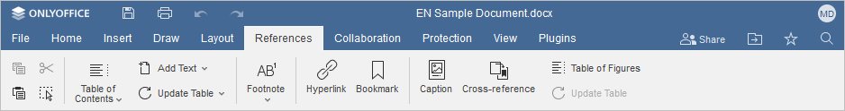
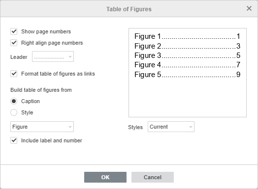
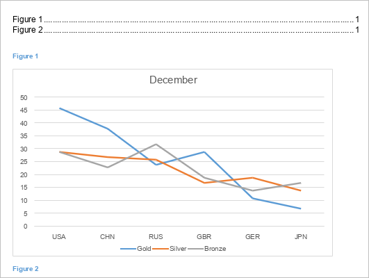
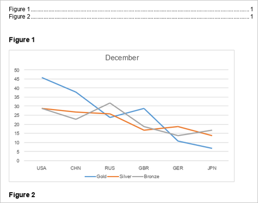
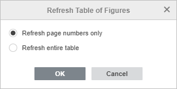

Dodavanje i formatiranje Tabele slika
Tabela slika pruža pregled jednačina, slika i tabela dodatih u dokument. Slično kao sadržaj, Tabela slika prikazuje, sortira i raspoređuje objekte sa natpisima ili naslove sa primenjenim stilom. To olakšava referenciranje u dokumentu i navigaciju između slika. Klikom na link u Tabeli slika, koji je formatiran kao veza, bićete direktno prebačeni na sliku ili naslov. U Document Editor, svaka tabela, jednačina, dijagram, crtež, grafikon, mapa, fotografija ili drugi tip ilustracije prikazani su kao figura.

Da biste dodali Tabelu slika, idite na karticu Reference i koristite dugme Tabela slika na traci sa alatkama za podešavanje i formatiranje tabele slika. Dugme Osveži koristite da ažurirate tabelu svaki put kada dodate novu figuru u dokument.
Kreiranje Tabele slika
Napomena: Tabelu slika možete kreirati koristeći figure sa natpisima ili stilove. Pre nego što nastavite, potrebno je dodati natpis svakoj jednačini, tabeli ili slici, ili primeniti stil na tekst kako bi bio ispravno uključen u Tabelu slika.
- Jednom kada dodate natpise ili stilove, postavite kursor gde želite umetnuti Tabelu slika i idite na karticu Reference, zatim kliknite na dugme Tabela slika da otvorite dijalog i generišete listu figura.

- Izaberite opciju da kreirate Tabelu slika iz Natpisa ili Stil grupe.
- Možete kreirati Tabelu slika zasnovanu na objektima sa natpisima. Označite polje Natpis i izaberite objekat sa natpisom iz padajuće liste:
- Nijedan;
- Jednačina;
- Slika;
- Tabela.

- Možete kreirati Tabelu slika zasnovanu na stilovima korišćenim za formatiranje teksta. Označite polje Stil i izaberite stil iz padajuće liste. Lista opcija može varirati u zavisnosti od primenjenog stila:
- Naslov 1;
- Naslov 2;
- Natpis;
- Tabela slika;
- Normalno.

- Možete kreirati Tabelu slika zasnovanu na objektima sa natpisima. Označite polje Natpis i izaberite objekat sa natpisom iz padajuće liste:
Formatiranje Tabele slika
Opcije sa poljima omogućavaju formatiranje Tabele slika. Sva polja su po default-u aktivirana, jer je u većini slučajeva bolje da budu uključena. Isključite polja koja nisu potrebna.
- Prikaži brojeve stranica - prikazuje broj stranice na kojoj se figura nalazi;
- Poravnaj brojeve stranica desno - prikazuje brojeve stranica desno kada je aktivirano Prikaži brojeve stranica; isključite da se brojevi prikazuju odmah posle naslova;
- Formatiraj tabelu slika kao veze - dodaje hiperveze u Tabelu slika;
- Uključi natpis i broj - dodaje natpis i broj u Tabelu slika.
- Izaberite stil vodiča (Leader) iz padajuće liste da povežete naslove sa brojevima stranica radi bolje vizualizacije.
- Prilagodite stil teksta Tabele slika izborom jednog od dostupnih stilova iz padajuće liste:
- Trenutni - prikazuje prethodno izabrani stil.
- Jednostavan - ističe tekst podebljanim slovima.
- Online - ističe i formatira tekst kao hipervezu.
- Klasičan - prikazuje tekst velikim slovima.
- Distinktivan - ističe tekst kurzivom.
- Centriran - centrira tekst i ne prikazuje vodič (Leader).
- Formalni - prikazuje tekst u Arial 11 pt radi formalnijeg izgleda.
- Prozor za pregled prikazuje kako Tabela slika izgleda u dokumentu ili kada se štampa.
Ažuriranje Tabele slika
Ažurirajte Tabelu slika svaki put kada dodate novu jednačinu, sliku ili tabelu u dokument. Dugme Osveži postaje aktivno kada kliknete ili izaberete Tabelu slika. Kliknite na dugme Osveži na kartici Reference i izaberite odgovarajuću opciju iz menija:

- Osveži samo brojeve stranica - ažurira brojeve stranica bez primene promena na naslovima.
- Osveži celu tabelu - ažurira sve naslove koji su izmenjeni i brojeve stranica.
Kliknite OK da potvrdite izbor ili
Desnim klikom na Tabelu slika u dokumentu otvorite kontekstualni meni, zatim izaberite Osveži polje da ažurirate Tabelu slika.